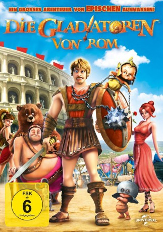

#1768 Die Gladiatoren von Rom
Alternativ: Gladiators of Rome (Originaltitel)
 
 IMDB-Wertung: 5.2 / 10
IMDB-Wertung: 5.2 / 10  Metascore: 0
Metascore: 0 
Es ist die Zeit des römischen Imperiums. Der junge Timo wurde durch die Zerstörung Pompejis zum Waisenkind, doch der gütige General Chirone adoptiert ihn und bildet ihn an der besten Gladiatorenschule Roms aus. Doch so ganz zum legendären Krieger taugt Timo nicht - im Gegenteil. Er möchte lieber mit seinen Freunden Ciccius und Mauritius rumhängen als sich den Gängelungen und absurden Trainingsmethoden seines Stiefvaters aussetzen. Bis er eines Tages die wundervolle Lucilla trifft und plötzlich sein Kampfgeist geweckt wird. Wird er der größte Gladiator werden, den Rom je gesehen hat?
Jahr: 2012
Dauer: 94 Minuten
FSK: 6
Land: Italien Studio: Universal PicturesTonspuren:
Untertitel:
Auflösung: 1080p (1920x816) Größe: 3563 MB
Genre: Animation/Trick, Abenteuer, Komödie
Regisseur: Iginio Straffi
Drehbuch: Iginio Straffi
Soundtrack: Bruno Zambrini
Darsteller:
- Luca Argentero als Timo
- Laura Chiatti als Lucilla
- Flaminia Fegarotti als Diana
- Jo Wyatt als Lucilla
- Daniela Abbruzzese als Circe
- Stefano Alessandroni als
- Enzo Avolio als Domiziano
- Diego Baldoin als
- Tim Beckman als Cassio
- Antonio Bonanotte als
- Fabrizio Bucci als
- Daniela Calò als
- Leonardo Caneva als
- Enrico Chirico als
- Ambrogio Colombo als
- Wladimiro Conti als
- Paolo Corridore als
- Massimo Corvo als Chirone
- Michele Cucuzza als Riccone
- Fabrizio De Flaviis als Cassio
- Marco de Risi als
- Andrea Di Maggio als
- Alessandra Grado als
- Leonardo Graziano als
- Jonathan Keeble als Domiziano
- Ilaria Latini als
- Paolo Macedonio als
- Gianluca Machelli als Ciccius
- Gabriele Martini als
- Fabrizio Mazzotta als Mauritius
- Giovanni Petrucci als
- Belén Rodríguez als Diana
 John Schwab als Timo
John Schwab als Timo- Emma Tate als Circe
- Francesco Vairano als Fabrickius
- Arturo Valli als
- Gaetano Varcasia als
Datei: X:\Kinder Filme (G-M)\Gladiatoren von Rom, Die (2012, FSK6, 1920x816).mkv seit 18.08.2015
Festplatte: Kinder-Filme+Trick
 Es gibt insgesamt 84 Filme in der Gruppe 'Kinder Filme (G-M)'
Es gibt insgesamt 84 Filme in der Gruppe 'Kinder Filme (G-M)'